Galería de Gráficas¶
Todos los gráficos generados durante el preprocesamiento del dataset.
EDA — Análisis Exploratorio de Datos¶
1. Mapa de valores faltantes¶
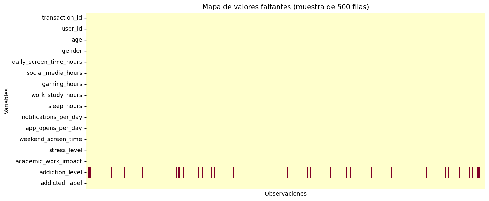
2. Distribuciones — Variables numéricas¶
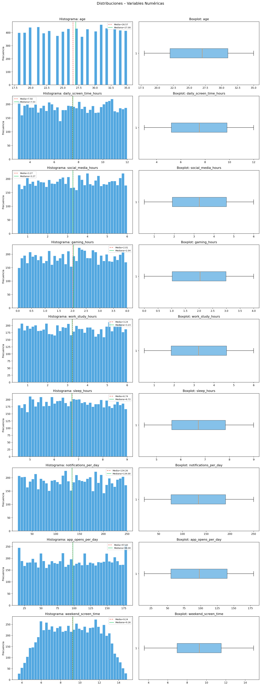
3. Distribuciones — Variables categóricas¶
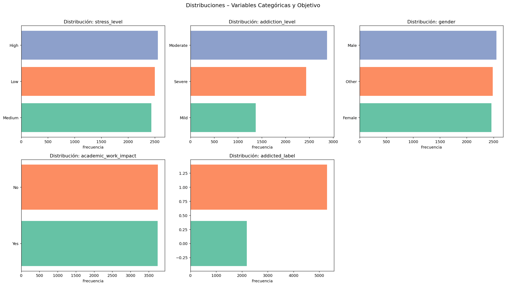
4. Matrices de correlación (Pearson y Spearman)¶
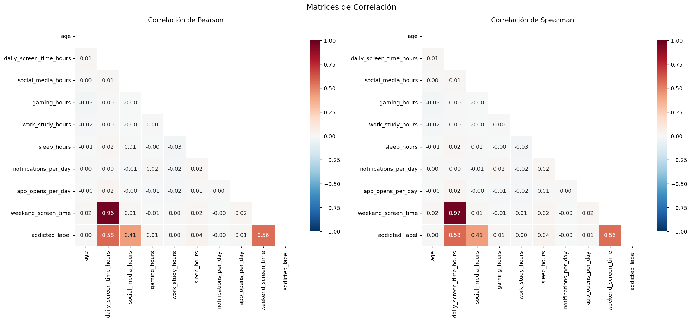
5. Scatter plots — Top correlaciones con addicted_label¶
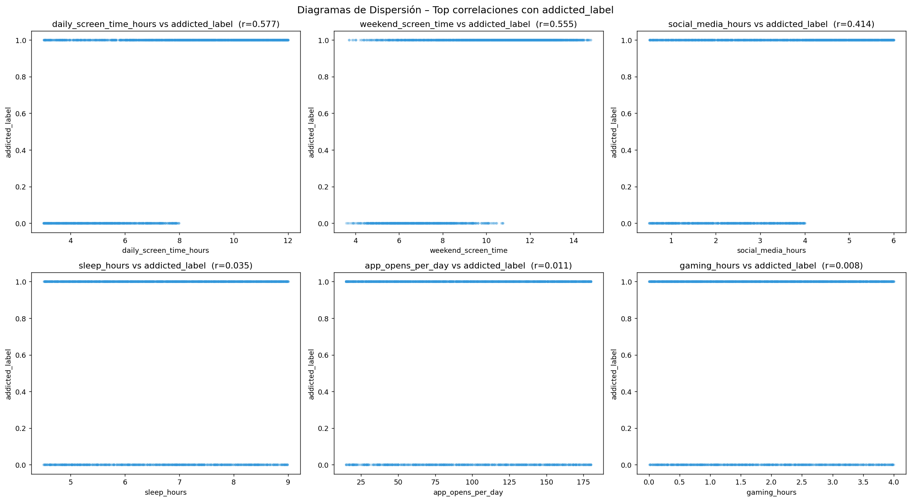
6. Detección de outliers (Boxplots)¶
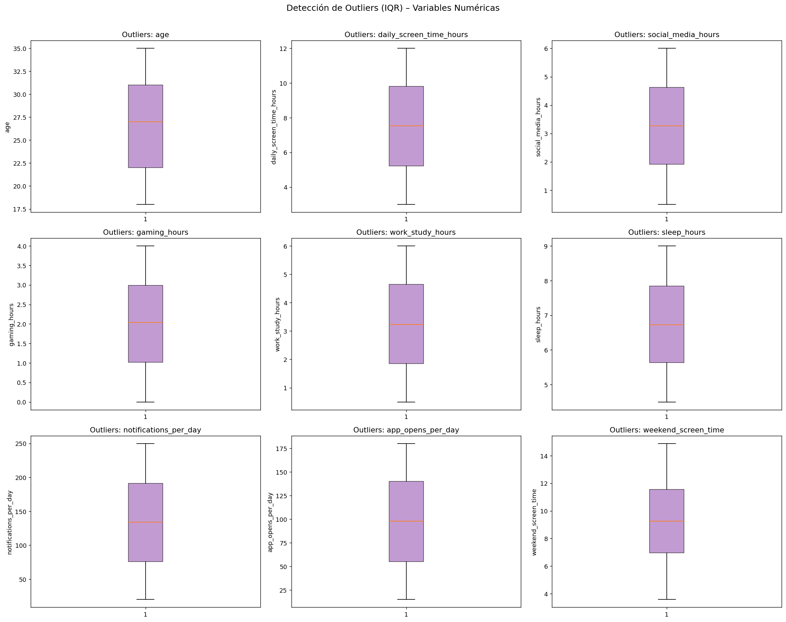
7. Variables categóricas vs variable objetivo¶
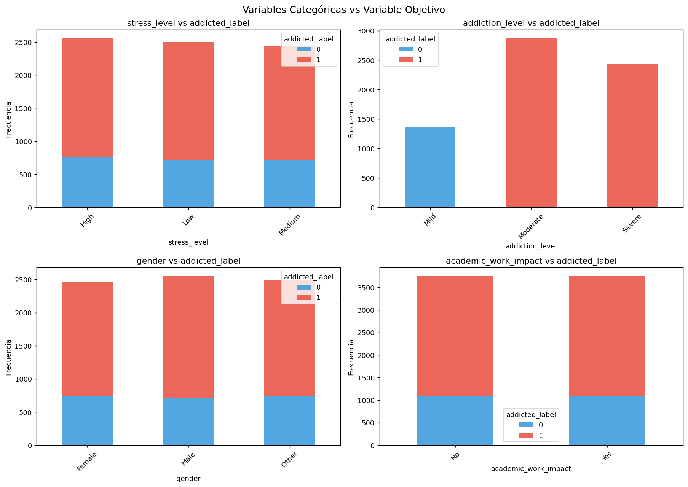
8. Violin plots — Distribuciones por grupo de adicción¶
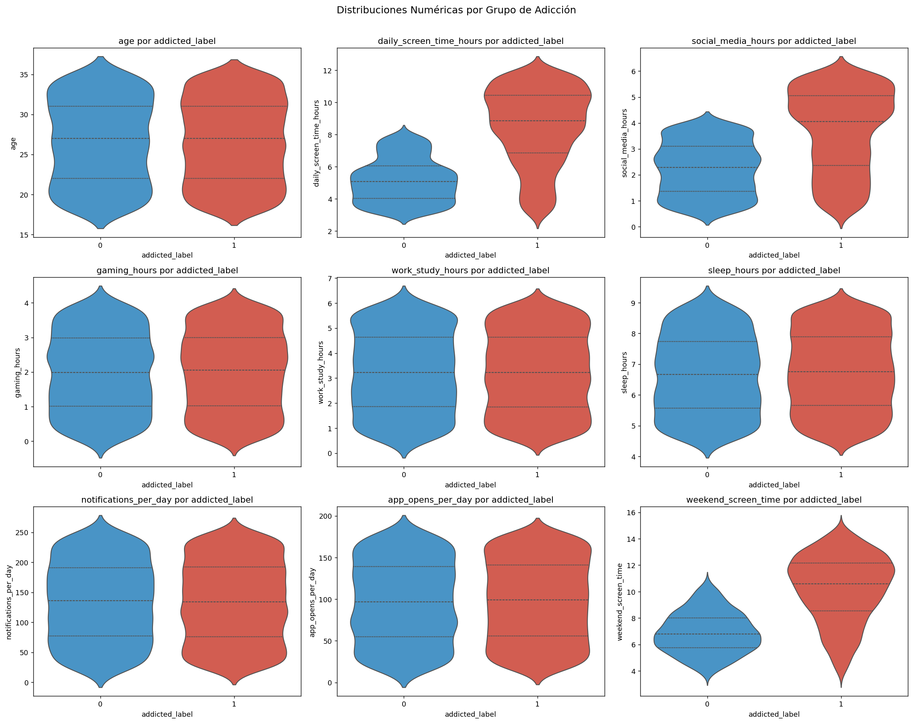
9. Pairplot — Variables clave por grupo¶
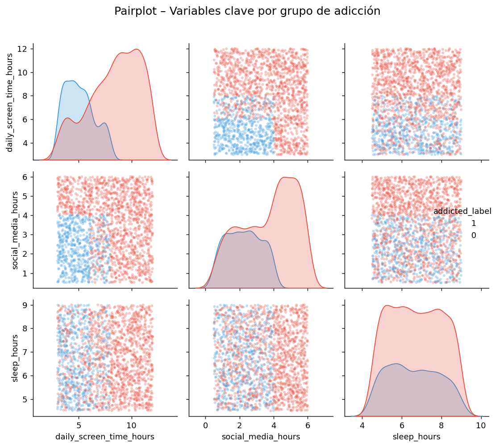
Tratamiento de Valores Faltantes¶
10. Distribuciones: filas con NaN vs sin NaN¶
Comparación de las distribuciones de las variables numéricas principales entre las filas donde addiction_level es NaN y donde no lo es. Las diferencias en daily_screen_time_hours y social_media_hours se explican por la asociación de los NaN con el grupo no adicto.
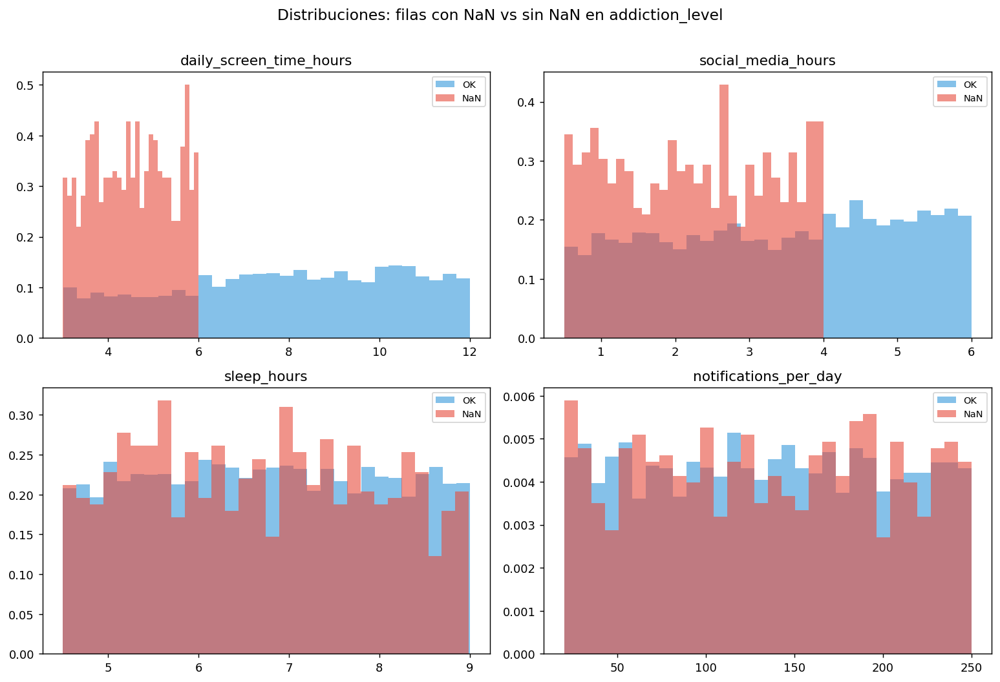
11. Tabla cruzada: addiction_level × addicted_label¶
Visualización de la relación determinista entre addiction_level y addicted_label. Los NaN corresponden exclusivamente a addicted_label = 0.
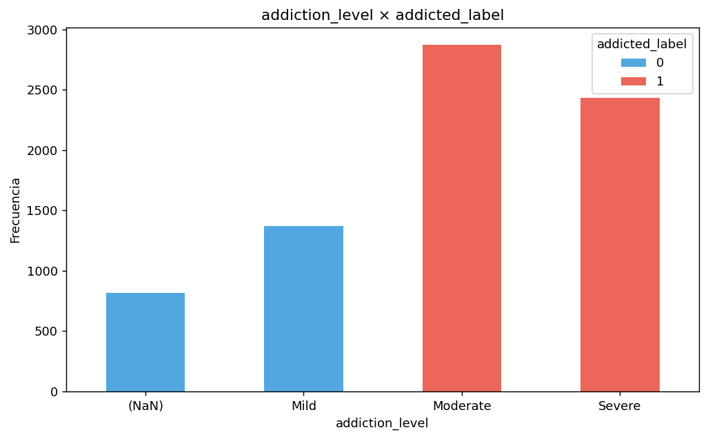
Ingeniería de Características y Selección de Variables¶
12. Importancia de variables seleccionadas (Stepwise Forward)¶
Coeficientes absolutos del modelo logístico final. Las variables en verde son estadísticamente significativas (p < 0.05).
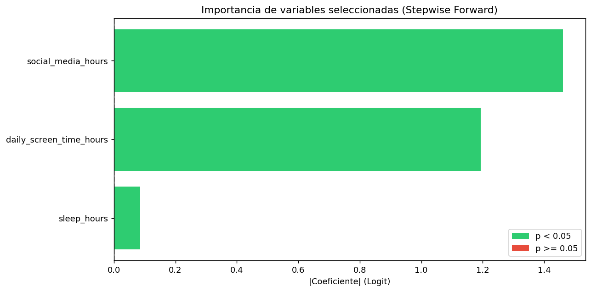
13. Evolución del AIC — Stepwise Forward¶
Reducción progresiva del AIC al incorporar cada variable. La mayor ganancia se produce con daily_screen_time_hours y social_media_hours.
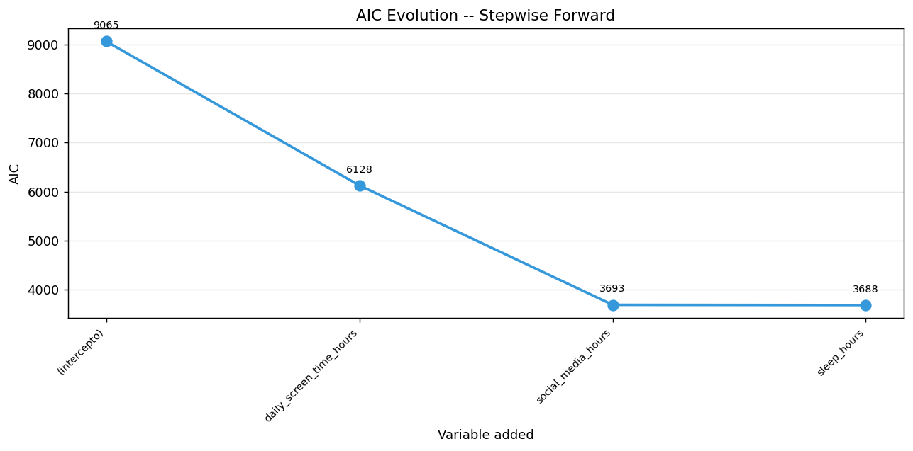
14. Correlaciones — Variables seleccionadas¶
Matriz de correlación del dataset final con las 3 variables seleccionadas y el target. La baja correlación entre predictoras confirma que no hay redundancia.
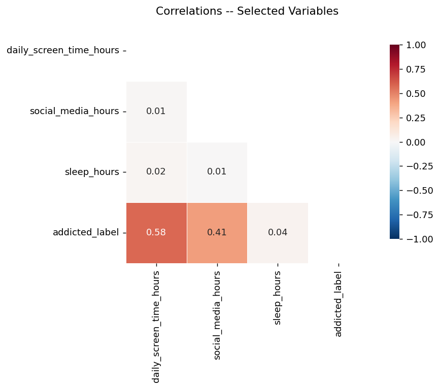